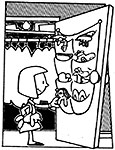
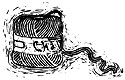

My family put a stop to the daily scavenger hunt for mittens, scarves, hats, etc., by storing their winter sundries in two shoe bags that hang on the inside of our front hall closet door.- George Earley,Bloomfield, Connecticut
Our fence posts used to suffer because the cattle used them as back scratchers all winter; by spring, those uprights would have a definite list. But we finally solved the problem! We bought an old street-sweeping brush from the city street department for $5.00, sank an eight-foot 4 X 6 three feet into the ground, and slipped the brush over that upright. The brush does such a good job of relieving itches that our cattle leave the fence posts alone.- Kathy Machotka, Peyton, Colorado
There's nothing as frustrating as sticking a log in your stove only to discover that you cut it just a tad too long for the firebox. But you can avoid this predicament by turning your chain-saw bar into a ruler. Simply stick the bar of your saw in your (cold) firebox or use a tape measure to find the length you need your logs to be, and then mark that measurement on both sides of your chainsaw bar with a felt-tipped permanent marker. This way, you'll have an accurate guide every time you cut firewood. - Barry Churchill, Lasqueti Island, B. C., Canada
I've found that the best honing oil for whetstones is a mixture of equal parts light mineral oil and kerosene. It works as well as, or better than, the commercial lubricants, and it's a whole lot cheaper! -Fred Hargreaves, Moab, Utah
When wrapping a package with cotton string, try dampening the cord first. The string will shrink, and you'll wind up with a neat, tight package. -Bonnie Hamlin, Santa Rosa, California
Want privacy in an area with windows, while still getting plenty of natural light? Two layers of bubble wrap plastic packaging material-with bubble sides together-will do the job . . . and even provide a little insulation!- Josun, Seattle, Washington
A few stalks of rhubarb cut up and boiled in a teakettle full of water will soften lime deposits so they can be scrubbed away easily. -Shirley Bredow, Bad Axe, Michigan
We've found a low-cost way to share news of our children's educational develop ment with their long-distance grandparents. We write all our letters home on the backs of the youngsters' school papers. Not only does this show-not just tell-our children the value of recycling, but it also encourages them to do their best with their schoolwork. They know their grandparents will examine these essays, tests, and works of art even more closely than their teachers do!- Bob Filipovich, Anaconda, Montana
One of the little frustrations of Christmas cookie making is trying to measure honey or molasses-it's almost impossible to get every drop of the gooey stuff out of the measuring cup. I've found that if I measure my oil first and then measure my sweetener in the same unrinsed cup, it'll slide right out. If no oil is called for in the recipe, I just grease the cup lightly with butter or margarine.- Claudia Barber, Cary, North Carolina.
Instead of throwing away the paper wrappers from sticks of butter or margarine, I fold them up-buttery side in-and stick them in the freezer in a plastic bag. They're perfect for greasing cake pans and muffin tins!- Shellinda Hampton, Portland, Oregon
Through the years we've all probably discovered a few practical, down-home, time-tested solutions to the frustrating little problems of everyday life. Why not share your best "horse sense" with the rest of MOTHER's readers? Send your suggestions to Country Lore, THE Mother Earth News, 105 Stoney Mountain Rd., Hendersonville, NC 28791. A one-year subscription-or a one year extension of an existing subscription-will be sent to each contributor whose tip is printed in this column.-MOTHER.
|
 |
|
|
|
 |
|
|